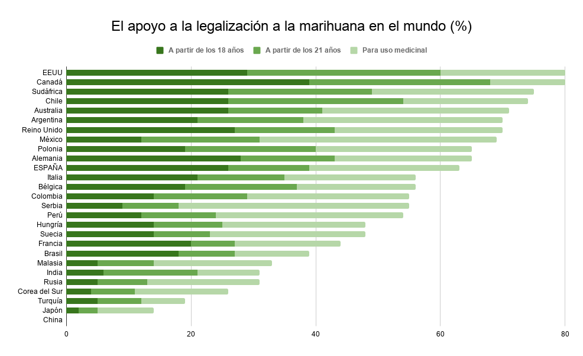

La legalización de la marihuana para uso medicinal es la que más respuestas afirmativas concentra de media la encuesta en todo el globo terráqueo, con excepciones como las de Canadá, Brasil, Francia y Alemania, cuyos ciudadanos proponen regularizar el cannabis para los mayores de 18 años, independientemente de su estado de salud. También ocurre en España, donde un 26% de los españoles propone la legalización del consumo a partir de la mayoría de edad, por un 24% que limitaría la ingesta a usos terapéuticos
